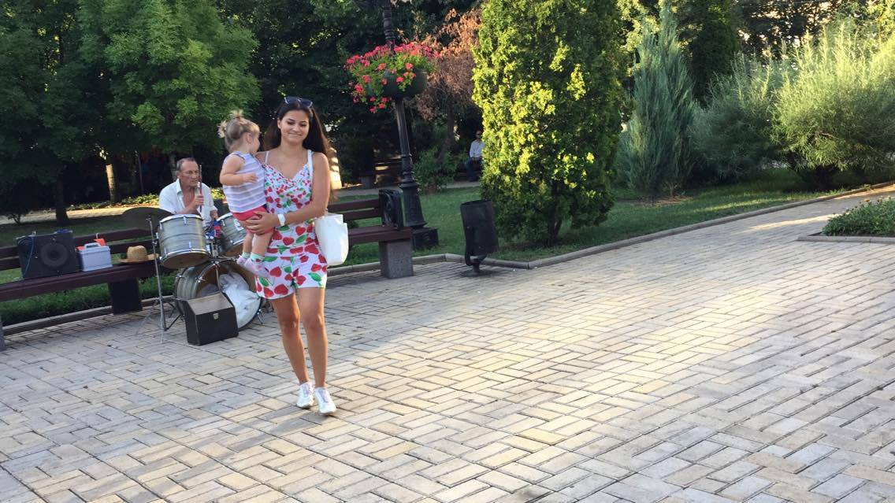

Historia de un Amor
Моя ли ты радость?! Да. Я с уверенностью могу так говорить. то что я ощущаю запах природы, аромат скошенной травы и глубину звездного неба. То как я погружаюсь в беседу с тобой и то что я чувствую посылая или принимая слова. Я тебя совсем не знаю и никогда не видел. Велика вероятность того что нам не суждено будет встретится а если и встретимся то это будет мимолетная встреча, дарит мне надежду которая наполняет меня изнутри. Как кружится голова от мысли о том что все что я пишу не есть пустословие а полно веры и надежды. И то что ты ассоциируешь меня с мелодией которая так чувственно передает мой внутренний мир. Это безумие ожидание ответа от тебя. Я не знаю как еще описать все это словами. Я наслаждаюсь здесь и сейчас. Я благодарю тебя за то что ты мое наказание
Она и Он
у меня уже есть кое какие мысли на счет будущего. думаю они дополнятся
ну да. узнав обо мне и моем прошлом вы ведь будете формировать свои взгляды на отношение ко мне в будущем
Влюбленность
влюбленность не перерастает в любовь. влюбленность искажает видение человека, а любовь нет. соответственно как влюбленность может перерасти в любовь? как одинаково можно воспринимать розовые очки и отсутствие их? как мир в розовых очках может перерасти в мир без них? ты не захочешь их снимать. ты не захочешь реальность, потому что во влюбленности все хорошо именно благодаря присутствию этих очков. но ты их снимаешь и что потом ощущаешь любовь? нет. ты ощущаешь разочарование. разочарование человеком. влюбленность исчезает. ты видишь человека другим и начинаешь узнавать его другого, если конечно захочешь после своего разочарования. и если это удается, ты начинаешь чувствовать человека, понимать его, прощать слабости, слушать и слышать, ты начинаешь сливаться с ним. в реальности, без выдумок, без огня и страсти. и вот тогда появляется любовь. ты понимаешь что ты можешь тоже самое что и при влюбленности но только спокойно твердо уверенно. появляется жертвенность. ты умеешь быть рядом с человеком и отпускать его и при этом чувствовать одинаковое - любовь. а потом вспыхивает страсть, но это новая страсть. но она может и не вспыхнуть. но страсть никак не может повлиять на любовь. ты все равно будешь любить.
кофе. все верно, только стоит добавить концовку. когда его пьешь и наслаждаешься. да у тебя остается в руках пустая чашка. но ты понимаешь как он прекрасен и тебе хочется заваривать и пить его еще. находить выход из пустоты и понимать, что конец с пустотой полностью подчеркивает все. и ты хочешь дальше продолжать пить кофе, а не бросать это дело, потому что в конце будет пустая чашка
мы больше ценим прошлое потому что боимся, что эти прекрасные моменты никогда не повторятся. ни в настоящем ни в будущем. нужно поверить в то, что будет все еще лучше)) все будет так, как должно быть для нас. и конечно это хорошее зависит от наших мыслей стремлений терпения и поступков.
мы смотрим на звезды потому что нам кажется что все хорошее так же осталось далеко как эти звезды. оно осталось рядом, внутри нас в нашей душе и нашем сердце. мы смотрим на звезды на море еще потому что как бы пытаемся запечатлеть воспоминания в них. в отдельных частях природы мы пытаемся оставить частичку дорогого, чтобы потом взглянув на них вспомнить все.
да верно подмечено, что любовь рождается вспышкой. как сотворение мира. и начинает формироваться как эволюция в мире. и мы можем поспособствовать этому или уничтожить на начальной стадии. влюбленность оставляет шрамы, любовь же нет. она живет вечно. маленькая или большая не важно, та которую ты сам сотворил. в таком состоянии в котором ты ее оставил в процессе эволюции. и только от тебя и твоего желания зависит будет ли эпоха компьютеров или все останется на стадии динозавров. но и компьютеры и динозавры прекрасны одинаково. просто одни младше в своем развитии а другие старше
Первая встреча
Хотите знать что я делал все это время... Я сидел перед монитором. Просто сидел. я не могу ничего делат. я хочу вам написать но не могу. вернее мне все это время потребовалось что бы пересилить себя и все же написать вам. я даже ленту новостей не мог прокручивать что бы хоть как то себя отвлечь. все как то ничтожно. хотя нет. вру. я покурил еще кальян. и вам наверно интересно по какой причине или что у меня было внутри. и мне тяжело в этом признаться. а еще музыку в уши вставил. когда сидел перед монитором. было дикое желание удалить половину песен. но среди них были те которые действительно дополняли мою грусть. а может это и не грусть. я не знаю. мне плохо от того что так хорошо. и я читал каждое ваше сообщения. сразу. хочется просить у вас прощения и стоять на коленях. нет не за то что не отвечал сразу. а за все. за эти 5600 сообщений. с ума сойти.. это если в часе 60 минут а в сутках получается 1440 то за неделю 10080 минут.. это молучается что каждые две минуты на протяжении недели вы или я слали друг другу сообщение. и безсоница мне обеспечена. и крыша съехала играла. Боже такой поток мысли вы хоть понимаете о чем речь? могу сказать что сейчас после кальяна у меня хоть они уже в порядом становятся. я так дума. Да какой нафиг в порядке?! Боже кого я обманую. сам себя. чем дальше тем больше накрывает. это невыносимо. так антоша соберись. тебе нужно ей все рассказать
Клубнички. Мне очень нравится садово парковый ансамбль на бульваре. Но клубничек там явно не хватало. Я аплодирую вам стоя. Вы даже сделали так что наши взгляды не пересеклись. Могу расценивать как заботу с вашей стороны. Думаю если бы они еще и пересеклись то я бы вам тогда вообще не смог написать или бы написал дня через три... я даже этот текст открыл в блакноте. не знаю хватит ли мне духа отправить его вам. но это будет не правильно по отношению к вам. я должен это сделат. а что я могу сделать? я думаю вы и так читаете тут все между строк и понимаете...
Когда чувства переполняют
сижу сейчас в машине... и не могу не написать:)
спасибо тебе большое за все! сегодняшний день был невероятным и волшебным. любовь внутри меня стала сильнее и больше и развивается с каждой минутой и все благодаря тебе. я чувствую тебя в своей жизни, ты дополняешь ее. и голова такая ясная, мысли не путаются, как ты любишь говорить "все и так понятно". я не хочу чтобы это было мимолетно, я хочу это навсегда! вот эту нежность, эту нашу связь и все случайности которые не случайны. сегодня все мои сомнения и неуверенность в себе были уничтожены. я так рада этому!
я хочу тебя в своей жизни, в своей тайной комнате:) хочу наполняться тобой и любовью к тебе. я хочу тебя любить! и хочу дарить эту любовь, хочу чтобы ты чувствовал ее даже через мертвый текст.и знал, что у не не будет конца. я хочу дарить тебе спокойствие, радость, уверенность, оптимизм, свое безумие и улыбки. да будет трудно, будет легко, будет по всякому. но мы ведь банда и все переживем.
я восхищаюсь тобой! таким разным и таким прекрасным. хочу снова смотреть в эти голубые глаза и чувствовать смущение.
твой запах на мне и вкус губ... как это поднимает в небо. знаешь, как трепетно отношусь ко всему этому. и к тем фантикам у тебя в кармане:)
чувства переполняют, в груди горит огонек. только мыслей... а каково это обнимать тебя и отдавать свое тепло... снова и снова дрожать от прикосновений и наполняться наполняться наполняться любовью. все останется со мной навсегда и никто не отнимет у меня эти ощущения. как это здорово любить!могу задать тебе тот же вопрос. зачем я тебе нужна? зачем написал мне? но надо ведь послать куда подальше эти вопросы? они так отвлекают от главного. то что мы чувствуем, вот что главное. и если бы не нужны были друг другу, то никогда бы в жизни не почувствовали бы ничего. как бы не общались и как бы не пытались. нам это нужно! н.у.ж.н.о.
просто так ни за чем. просто для души, для радости, для полноты жизни. мы же это уже поняли. что мы были недостающими пазликами в жизни друг друга. нужно просто в это поверить.
верить потому что так оно и есть! скажи, ты ведь счастлив? разве ты не имеешь права быть счастливым? разве ты не заслуживаешь этого?
и я счастлива! я встретила человека, который понимает меня, чувствует, может принять все мои чувства и счастлив со мной. что еще нужно для полноты жизни?
Значит так должно быть
МОМЕНТЫ
жизнь идет, она не будет длиться вечно и она одна. и нужно прожить ее на полную катушку. нужно выгнать все тревожные мысли и наслаждаться моментом. и обязательно верить в лучшее и в будущее. да, будут какие-то моменты скользкие или плохие, но если настроиться, что мы все преодолеем вместе, то все будет хорошо. не так важна ситуация, как твое отношение к ней. отношение к ситуации определяет все - переживешь ты ее и выйдешь победителем или нет.
НИЧЕГО ПЛОХОГО
не подумай пожалуйста ничего плохого. я пытаюсь тебе показать что можно счастливо жить, как бы обстоятельства тебя не давили. думаешь мне не бывает плохо? думаешь я не утопаю в своих мыслях? думаешь мне не страшно? и я не задаю вопросов зачем это все и почему так произошло? я могу накрутить себя не хуже чем это делаешь ты, но я не хочу. я не хочу поддаваться страху и грусти, потому что они мне испортят все. я верю в то, что раз это произошло, значит так должно быть! значит я должна была полюбить. и я не жалею ни о чем. и никогда не буду жалеть.
ТАКОЙ КАК ТЫ
ты в моем сердце, ты, прекрасный человек, который для меня сделал много. я уже выше писала об этом. ты раскрываешь меня. с тобой жизнь обрела новые краски. это не каждый может дать, поверь. у тебя богатый внутренний мир, который тоже не каждый сможет понять. но я понимаю его! я чувствую его! я чувствую родство в суждениях, представлениях о жизни. я нашла человека такого же как я, у которого тоже богатое воображение.таким нельзя разбрасываться и нужно развивать. любовь это труд. но награда за этот труд невероятная. я сейчас уже получаю, получи и ты свою. потому что ты тоже работал над этими отношениями.